图表#
风险报告用图表展示各种表：每个分箱的事件率、评分的 ROC 曲线、自开发以来发生变化的占比。 kivi.plotting 用 matplotlib 绘制其他模块的结果表，每种表对应一个函数：WOE 表用 woe_chart() ，相关系数矩阵用 correlation_chart() ，ROC 表用 roc_chart() 和 precision_recall_chart() ，增益表用 gains_chart() ，增益表或 WOE 表中的事件和非事件用 distribution_chart() ，校准表用 calibration_chart() ，截断点表用 cutoff_chart() ，PSI 表用 psi_chart() ，监控报告用 monitoring_chart() ，Vintage 表用 vintage_chart() ，生存表用 survival_chart() ，迁移矩阵用 transition_chart() ，规则集表用 rule_set_chart() ，含收入和损失的截断点表用 profit_chart() ，LGD 表用 lgd_chart() 。
这些图表绘制的是前面各篇指南中的表，从 证据权重与信息值 到 存续期 PD 与预期信用损失 ，因此本页放在用户指南的最后。
matplotlib 是 kivi 的可选依赖。通过 plot 可选依赖组安装：
python -m pip install "kivi[plot]"
其他模块不需要它， kivi.plotting 也只在绘制图表时才导入它。
计算示例#
图表只绘制其表中的数值，别无其他。十个观测值，其中九个分属三个分组，一个缺失，得到如下 WOE 表：
>>> import pandas as pd
>>> from kivi.plotting import woe_chart
>>> from kivi.woe import woe_table
>>> groups = pd.Series(["a", "a", "b", "b", "b", "b", "c", "c", "c", None])
>>> target = pd.Series([1, 0, 1, 0, 0, 0, 1, 1, 0, 0])
>>> table = woe_table(groups, target)
>>> table[["total_share", "event_rate"]]
total_share event_rate
bin
a 0.2 0.500000
b 0.4 0.250000
c 0.3 0.666667
NaN 0.1 0.000000
woe_chart() 是唯一带有两个 y 轴的图表，因此也是唯一返回两个 Axes 的图表：一个用于柱形，对应左侧 y 轴；一个用于折线，与柱形共用 x 轴，并在右侧有自己的 y 轴。柱形是 total_share 列，折线是 event_rate 列，刻度标签是索引中的分组，图例给出 iv 列之和：
>>> bars, line = woe_chart(table)
>>> [bar.get_height() for bar in bars.patches] == table["total_share"].tolist()
True
>>> line.get_lines()[0].get_ydata()
array([0.5 , 0.25 , 0.66666667, 0. ])
>>> [label.get_text() for label in bars.get_xticklabels()]
['a', 'b', 'c', 'NaN']
>>> line.get_legend().get_title().get_text()
'iv = 0.536'
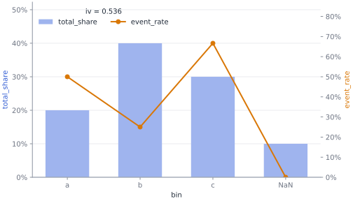
柱形在左轴上分别为 20%、40%、30% 和 10%，折线在右轴上分别为 50%、25%、67% 和 0%。#
图形与坐标轴#
每个函数都接受可选参数 ax 。不传入时，函数自行新建一个图形，尺寸适合该图表，并使用 matplotlib 的 constrained 布局；传入时，函数在该 Axes 上作图，这样多个图表可以共用一个图形：
>>> import matplotlib.pyplot as plt
>>> figure, (left, right) = plt.subplots(1, 2, figsize=(9, 3.5), layout="constrained")
>>> bars, line = woe_chart(table, ax=left)
>>> bars is left
True
>>> bars, line = woe_chart(table, line="woe", ax=right)
>>> len(figure.axes)
4
每个函数都返回所绘制的 Axes（给出 ax 时即为 ax ），以便之后用 matplotlib 修改标题、坐标范围和标签，例如 right.set_title("woe") 。 woe_chart() 返回柱形的 Axes 和折线的 Axes，所以上面的图形有四个 Axes。
这些函数从不调用 matplotlib.pyplot.show ，从不修改 matplotlib.rcParams ，也从不修改传入的表。用 figure.savefig("woe.png") 保存图形，在 notebook 之外用 plt.show() 显示图形。可以在同一个 ax 上比较的曲线，即 roc_chart() 、 precision_recall_chart() 、 gains_chart() 、 calibration_chart() 、 cutoff_chart() 、 profit_chart() 、 survival_chart() 和 monitoring_chart() 的曲线，使用 Axes 颜色循环中的下一种颜色；其他图表使用固定的颜色。字体、网格线和坐标轴边框遵循当前的 matplotlib 样式，因此用 plt.style.context 设置的样式会作用于其中绘制的图表。
图表中的文字只有列名（例如 total_share 和 event_rate ）和数据值（例如分组标签和 IV）。每个坐标轴以其所示的列为标签，分组和各期所在的坐标轴则以索引的名称为标签。因此同一张图表适用于任何语言的报告；标题请用报告的语言另行添加。
图例的位置不会遮挡数据： woe_chart() 、 distribution_chart() 和 psi_chart() 在 Axes 顶部为图例留出空间， vintage_chart() 和 monitoring_chart() 则把图例放在 Axes 的右侧。
WOE 与事件率#
从这里开始，示例使用内置的银行数据，并像 风控建模流程 中那样分为 3,000 行的开发样本和 1,521 行的验证样本。一个 BinningSpec 在开发样本上对五列分箱：
>>> from kivi.datasets import load_bank
>>> from kivi.spec import fit_spec
>>> data = load_bank()
>>> development, validation = data.iloc[:3000], data.iloc[3000:]
>>> columns = ["age", "balance", "housing", "contact", "poutcome"]
>>> spec = fit_spec(development[columns], development["target"])
woe_chart() 按表中的顺序绘制其中一张表。数值列的分箱本身已经有序；类别列的分组可以先排序（例如按 WOE），再用 line="woe" 把 WOE 画成折线：
>>> bars, line = woe_chart(spec.tables["age"])
>>> [label.get_text() for label in bars.get_xticklabels()]
['(-inf, 32.0]', '(32.0, 36.0]', '(36.0, 42.0]', '(42.0, 51.0]', '(51.0, inf]']
>>> bars, line = woe_chart(spec.tables["poutcome"].sort_values("woe"), line="woe")
>>> line.get_legend().get_title().get_text()
'iv = 0.423'
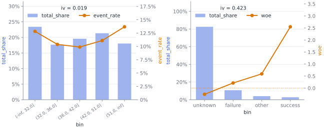
左：age 的事件率在中间几个分箱最低。右：五分之四的客户上次营销结果未知，而少数上次营销成功的客户 WOE 远高于其他分组。#
柱形和折线要结合起来看：事件率高的分箱，客户越多就越重要。柱形使用左轴，折线使用右轴；右轴对 event_rate 从 0 开始，对 woe 则包含 0。
相关性#
在 变量筛选 之前， correlation_chart() 展示哪些 WOE 编码后的候选变量携带相同的信息。它接受的是相关系数矩阵（例如 DataFrame.corr 的结果）而不是原始数据，因此可以绘制任何一种相关系数：
>>> from kivi.plotting import correlation_chart
>>> woe = spec.woe_transform(development[columns])
>>> woe.corr().round(2)
age balance housing contact poutcome
age 1.00 0.02 0.15 0.05 0.01
balance 0.02 1.00 0.04 0.03 0.09
housing 0.15 0.04 1.00 0.21 0.03
contact 0.05 0.03 0.21 1.00 0.19
poutcome 0.01 0.09 0.03 0.19 1.00
>>> ax = correlation_chart(woe.corr())
>>> len(ax.texts)
25
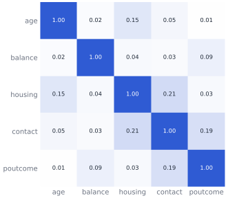
不同两列之间最大的相关系数是 housing 与 contact 之间的 0.21。#
每个单元格标出其数值，正相关为蓝色，负相关为琥珀色，越接近 1 和 -1 颜色越深。颜色总是覆盖 -1 到 1，因此不同样本的图表可以直接比较；超出这一范围的值（例如协方差矩阵中的值）会引发错误。要使用 Spearman 秩相关系数，请传入 woe.corr(method="spearman") 。
ROC 曲线#
roc_chart() 绘制 roc_table() 的结果。下面的评分把五列的 WOE 值相加，因此风险越高评分越高，符合 模型表现 的要求。用同一个 ax 再调用一次，加上只用 poutcome 的曲线， label 在图例中为两条曲线命名：
>>> from kivi.metrics import roc_table
>>> from kivi.plotting import roc_chart
>>> validation_woe = spec.woe_transform(validation[columns])
>>> score = validation_woe.sum(axis=1)
>>> y = validation["target"]
>>> ax = roc_chart(roc_table(score, y), label="score")
>>> ax = roc_chart(roc_table(validation_woe["poutcome"], y), ks=False, label="poutcome", ax=ax)
>>> [text.get_text() for text in ax.texts]
['ks = 0.299']
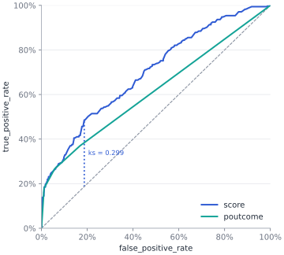
在大多数假正率下，评分的曲线都高于单独 poutcome 的曲线。点线段标出评分的 KS，为 0.299。#
点线段标出 KS 统计量，即 true_positive_rate 与 false_positive_rate 之间的最大差距，它等于该评分的 ks() 。每条曲线使用 Axes 的下一种颜色，其 KS 线段与曲线同色；不需要 KS 的曲线请传入 ks=False 。
精确率与召回率#
precision_recall_chart() 绘制同一张 roc_table() 的另外两列：从最高的评分开始向下标记客户，绘制 precision （被标记客户的事件率）相对于 true_positive_rate （被标记的事件占全部事件的比例，也称召回率）的变化。一条虚线标出样本的事件率，即随机排序评分的精确率：
>>> from kivi.plotting import precision_recall_chart
>>> ax = precision_recall_chart(roc_table(score, y), label="score")
>>> ax = precision_recall_chart(roc_table(validation_woe["poutcome"], y), label="poutcome", ax=ax)
>>> [text.get_text() for text in ax.texts]
['event_rate = 0.114']
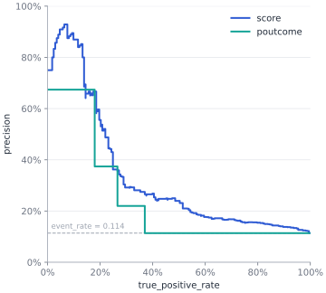
在被标记的事件达到全部事件的 14% 之前，最高的评分以约 85% 的精确率标记事件。此后精确率向 11.4% 的事件率下降，标记全部客户时曲线到达该事件率。单独的 poutcome 在它的四个分组上各有一级阶梯；最后一个分组包含大多数客户，因此从全部事件的 37% 开始，它的精确率就是事件率。#
ROC 表的第一行不标记任何客户，没有精确率。每条曲线从召回率 0 开始，以阶梯的形式依次经过其余各行：在到达某一行的召回率之前，曲线保持在该行的精确率上，因为用直线连接各行会高估它们之间的精确率。因此阶梯下的面积就是该评分的平均精确率。最后一行标记全部客户，因此每条曲线都终止于虚线上。每个事件率只画一条虚线，因此验证样本上的两个评分共用一条，而开发样本的曲线会有自己的一条。这种图表适合事件很少的样本，例如欺诈：好的评分的 ROC 曲线都挤在左上角，而精确率显示在每个召回率下被标记的客户中有多少是事件。 confusion_table() 给出所选截断点上的精确率和召回率。
增益与 KS#
gains_chart() 绘制 gains_table() 的结果：从最高的评分段向下，到目前为止已审视的评分段中的事件和非事件分别占全部事件和全部非事件的比例，横轴是已审视的样本占比：
>>> from kivi.metrics import gains_table
>>> from kivi.plotting import gains_chart
>>> ax = gains_chart(gains_table(score, y))
>>> ax.texts[0].get_text()
'ks = 0.271'
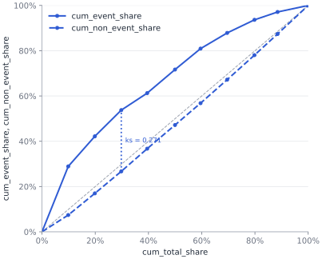
验证样本中风险最高的 30% 包含了 54% 的事件和 27% 的非事件，这是十个评分段中最大的差距。#
评分排序良好时，实线 cum_event_share 曲线位于对角线上方，虚线 cum_non_event_share 曲线位于下方。点线段标出 ks 最大的评分段。各评分段的 KS 至多等于 roc_chart() 中的 KS，后者比较的是每个评分而不只是评分段的边界。与 roc_chart() 一样， ks=False 不画这条线段， label 在图例中为评分命名，因此可以在同一个 ax 上绘制多个评分的增益曲线。
分布#
distribution_chart() 绘制增益表或 WOE 表的 non_event 和 event 列：每一行占全部非事件的比例和占全部事件的比例，并排显示。用固定的边界可以让评分段的标签更短：
>>> import numpy as np
>>> from kivi.plotting import distribution_chart
>>> bands = gains_table(score, y, bins=[-np.inf, -1, -0.5, 0, 0.5, 1, np.inf])
>>> bands[["non_event", "event"]]
non_event event
bin
(1.0, inf] 46 40
(0.5, 1.0] 166 31
(0.0, 0.5] 280 34
(-0.5, 0.0] 292 37
(-1.0, -0.5] 173 13
(-inf, -1.0] 391 18
>>> ax = distribution_chart(bands)
>>> [f"{bar.get_height():.3f}" for bar in ax.patches[:2]]
['0.034', '0.123']
>>> ax = distribution_chart(spec.tables["age"])
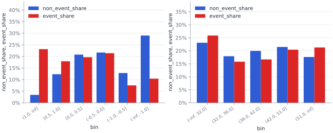
左图：最高的评分段包含 23% 的事件和 3% 的非事件，最低的评分段包含 10% 的事件和 29% 的非事件。右图：最年轻和最年长的年龄分箱在事件中的占比大于在非事件中的占比。#
各行保持表的顺序，因此增益表的评分段从最高的评分向下排列，空的评分段保留其位置，柱形高度为零。占比由原始计数算出：对于没有事件或没有非事件的分组，它们与 WOE 表的 event_share 和 non_event_share 列不同，后者经平滑后始终大于零。两个分布相差最大的地方，就是 gains_chart() 的两条累计占比曲线分开最快的地方。
校准#
calibration_chart() 绘制 calibration_table() 的结果。下面先在开发样本上用 platt_fit() 把评分转换为 PD，再像 校准 中那样，把验证样本的 PD 分入 master_scale() 的各个等级：
>>> import numpy as np
>>> from kivi.calibration import (
... assign_grades,
... calibration_table,
... master_scale,
... platt_fit,
... platt_predict,
... )
>>> from kivi.plotting import calibration_chart
>>> slope, intercept = platt_fit(woe.sum(axis=1), development["target"])
>>> probability = platt_predict(score, slope, intercept)
>>> scale = master_scale(np.geomspace(0.02, 0.32, 5), labels=list("ABCDE"))
>>> table = calibration_table(assign_grades(probability, scale), y, probability)
>>> table
total event event_rate mean_probability
bin
A 43 1 0.023256 0.023619
B 368 17 0.046196 0.041415
C 466 46 0.098712 0.085882
D 558 69 0.123656 0.153627
E 86 40 0.465116 0.435768
>>> ax = calibration_chart(table, label="validation")
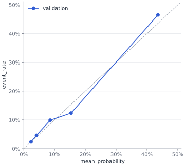
五个等级都贴近对角线；等级 D 的事件少于预测。#
位于对角线上方的点事件多于预测，位于下方的点事件少于预测。两个坐标轴都从 0 延伸到略高于最大比率，使对角线保持 45 度。图表展示每个等级偏离预测的程度，但不说明差异是否显著；这个问题由 binomial_test() 回答。
截断点#
cutoff_chart() 绘制 cutoff_table() 的结果：通过客群的坏账率随通过申请人占比的变化，PD 的每个截断点对应一个点：
>>> from kivi.plotting import cutoff_chart
>>> from kivi.strategy import cutoff_table
>>> ax = cutoff_chart(cutoff_table(probability, y, cutoffs=20))
>>> ax.get_xlabel(), ax.get_ylabel()
('approval_rate', 'approved_event_rate')
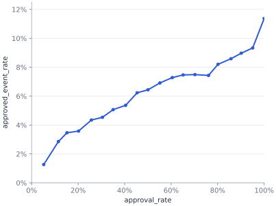
通过的申请人越多，通过客群的事件率越高：只通过最安全的 5% 申请人时约为 1%，全部通过时为 11%。#
曲线的斜率就是提高通过率所付出的风险代价。把现行评分和新评分的表画在同一个 ax 上并各自给出 label ，就能像 信贷策略 那样在相同通过率下比较二者。
群体稳定性#
psi_chart() 把 psi_table() 的结果画成成对的柱形，即每个分组的基准占比和当前占比。与 群体稳定性指标 中一样，单身客户比开发样本年轻得多：
>>> from kivi.plotting import psi_chart
>>> from kivi.stability import psi_table
>>> reference = spec.cut(development[columns])
>>> single = spec.cut(data.loc[data["marital"] == "single", columns])
>>> ax = psi_chart(psi_table(reference["age"], single["age"]))
>>> ax.get_legend().get_title().get_text()
'psi = 0.586'
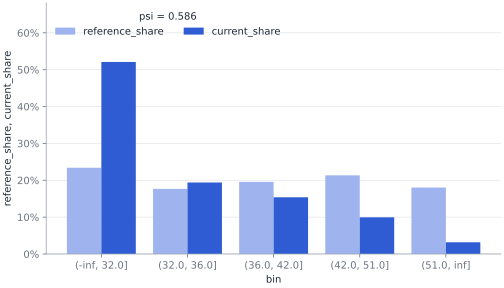
一半的单身客户落在最年轻的分箱中，而开发样本中这一比例不到四分之一。#
两根柱形相差最大的分组对 PSI 的贡献最大；图例给出整张表的 PSI。
监控#
monitoring_chart() 逐期绘制 monitoring_table() 中的一列。下面的申请数据像 模型监控 中那样模拟生成；最后三个月的结果尚未可知：
>>> from kivi.datasets import make_applications
>>> from kivi.monitoring import monitoring_table
>>> from kivi.plotting import monitoring_chart
>>> reference_applications = make_applications(n_applicants=10000, rng=0)
>>> applications = make_applications(n_applicants=24000, rng=1)
>>> months = pd.period_range("2025-01", periods=12, freq="M")
>>> applications["month"] = months[np.arange(24000) * 12 // 24000]
>>> known = applications["approved"] & (applications["month"] <= months[8])
>>> report = monitoring_table(
... applications["incumbent_pd"],
... applications["month"],
... applications["target"].where(known),
... reference_score=reference_applications["incumbent_pd"],
... )
对每一列各调用一次此函数，画在同一图形的不同子图上。 kind 把一列绘制为折线（默认）或柱形， levels 标出与该列比较的数值，例如 PSI 阈值 0.1 和 0.25。随后用 label_outer 隐藏上方子图的 x 轴标签，因为它与下方子图共用 x 轴：
>>> figure, (top, bottom) = plt.subplots(2, 1, figsize=(8, 5), sharex=True, layout="constrained")
>>> top = monitoring_chart(report, column="gini", ax=top)
>>> bottom = monitoring_chart(report, column="psi", kind="bar", levels=[0.1, 0.25], ax=bottom)
>>> top.label_outer()
>>> [text.get_text() for text in bottom.texts]
['0.1', '0.25']
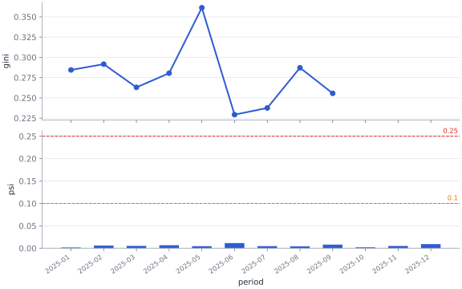
Gini 止于 9 月，这是最后一个结果已知的月份。每个月的 PSI 都远低于 0.1。#
折线适合比率和区分能力指标，也适合在同一个 ax 上绘制多列；柱形适合 total 等计数和单独的 psi 。决定画法的是 kind 而不是列名，因此任何每期一行的表都可以用两种方式绘制。
stability_table() 给出每个变量逐期的 PSI。把它的各列画在同一个 ax 上，每列带一个 label 。由于稳定性表的列名为 variable ，y 轴的标签为 psi ：
>>> from kivi.monitoring import stability_table
>>> features = ["age", "income", "debt_to_income"]
>>> application_spec = fit_spec(
... reference_applications[features], reference_applications["target"]
... )
>>> stability = stability_table(
... application_spec.cut(applications[features]),
... applications["month"],
... reference_groups=application_spec.cut(reference_applications[features]),
... )
>>> ax = None
>>> for column in stability:
... ax = monitoring_chart(stability, column=column, label=column, ax=ax)
>>> ax.get_ylabel()
'psi'
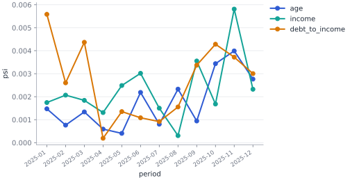
三个变量的 PSI 在每个月都低于 0.01。#
vintage 曲线#
vintage_chart() 为 vintage_table() 的每个批次绘制一条曲线，越晚的批次蓝色越深。位于 Axes 右侧的图例从二十四个批次中列出八个，从第一个到最后一个均匀分布，其余批次的颜色深浅介于它们之间：
>>> from kivi.datasets import make_loan_panel
>>> from kivi.plotting import vintage_chart
>>> from kivi.vintage import vintage_table
>>> panel = make_loan_panel(rng=0)
>>> ever_90 = vintage_table(
... panel["loan_id"], panel["cohort"], panel["month_on_book"], panel["status"] == "90+"
... )
>>> ax = vintage_chart(ever_90)
>>> [text.get_text() for text in ax.get_legend().get_texts()]
['2024-01', '2024-04', '2024-08', '2024-11', '2025-02', '2025-05', '2025-09', '2025-12']
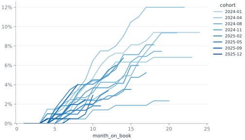
在第四个账龄月之前，没有任何批次出现逾期 90 天的贷款；较晚批次的曲线在其观测结束处终止。#
如果某个批次的曲线升到之前各批次的曲线之上，就值得仔细查看。此函数接受任何形状相同的表，例如 convert_pd() 给出的累计 PD。
生存曲线#
import matplotlib.pyplot as plt
plt.close("all")
survival_chart() 把 survival_table() 的 cumulative_pd 从第 0 期起画成阶梯线，用 column="survival" 则画 survival 。在有提前还款的贷款组合中，还清的贷款不经违约就离开风险集，这就是竞争风险。此时 cumulative_pd 的曲线是逾期 90 天以上的累计发生率，图中再加上提前还款的累计发生率：
>>> import pandas as pd
>>> from kivi.lifetime import survival_table
>>> from kivi.plotting import survival_chart
>>> panel = make_loan_panel(rng=0, prepayment=0.01).sort_values(["loan_id", "month_on_book"])
>>> last = panel.groupby("loan_id").tail(1).set_index("loan_id")
>>> first = panel[panel["status"] == "90+"].groupby("loan_id")["month_on_book"].min()
>>> duration = last["month_on_book"].copy()
>>> duration[first.index] = first
>>> event = pd.Series(0, index=duration.index)
>>> event[first.index] = 1
>>> repaid = (
... (last["balance"] == 0) & (last["month_on_book"] < last["term"]) & (event == 0)
... ).astype(int)
>>> table = survival_table(duration, event, competing=repaid)
>>> ax = survival_chart(table)
>>> [line.get_label() for line in ax.get_lines()]
['cumulative_pd', 'competing']
>>> [round(float(line.get_ydata()[-1]), 3) for line in ax.get_lines()]
[0.076, 0.19]
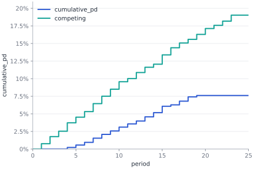
24 个月后，7.6% 的贷款进入逾期 90 天以上，19% 提前还清。#
每条曲线都是阶梯函数，因为估计值只在有事件发生的期数才变化。没有 competing 时图中只有一条曲线， column="survival" 也总是只画一条：既未违约也未还清的贷款占比。
转移矩阵#
transition_chart() 绘制两个相邻月末之间的 transition_matrix() ，行是之前的状态，列是之后的状态。单元格写的是计数，低于 10,000 时写全，高于时加后缀 K 、 M 或 B ；对 normalize=True 算出的矩阵则是占比。深浅取决于其所在行的占比，因此无论各状态的大小，都能看出每个状态流向何处。对角线，即状态未变的个体，用琥珀色描边：
>>> from kivi.plotting import transition_chart
>>> from kivi.vintage import transition_matrix
>>> status = panel["status"]
>>> after = panel.groupby("loan_id")["status"].shift(-1)
>>> known = after.notna()
>>> states = ["current", "1-29", "30-59", "60-89", "90+"]
>>> matrix = transition_matrix(status[known], after[known], states=states)
>>> ax = transition_chart(matrix)
>>> [text.get_text() for text in ax.texts][:5]
['45.8K', '1068', '0', '0', '0']
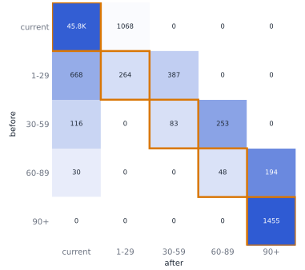
多数贷款保持正常，进入 90 天以上档位的贷款没有一笔返回。#
无论矩阵是计数还是占比，图都能画。 roll_rates() 的滚动率是每个状态迁移到下一个更差状态的比例，即 transition_matrix(..., normalize=True) 对角线右侧紧邻的那个单元格，同一张图把它和其他所有单元格一起画出。 roll_rates() 本身是 Series，每个状态一个值，应当当作表来读，而不是绘制：只有一列的表会引发错误，因为它的每个单元格都会按整行着色。
规则集#
rule_set_chart() 绘制 rule_set_table() ，即依次应用的规则。柱形是每条规则的 new_hits ，即它拒绝而此前的规则都没有拒绝的申请人，占全部申请人的比例；折线是该规则之后剩下的 approval_rate ，在同一条坐标轴上。因此折线上的每个点等于前一个点减去其规则的柱高，从 100% 开始：
>>> from kivi.plotting import rule_set_chart
>>> from kivi.rules import rule_set_table
>>> applications = make_applications(n_applicants=40000, rng=0)
>>> flags = pd.DataFrame(
... {
... "high_debt": applications["debt_to_income"] >= 0.5,
... "young": applications["age"] < 25,
... "many_inquiries": applications["inquiries"] >= 4,
... }
... )
>>> table = rule_set_table(flags, applications["target"])
>>> ax = rule_set_chart(table)
>>> [round(float(bar.get_height()), 4) for bar in ax.patches]
[0.1128, 0.0696, 0.0199]
>>> ax.get_lines()[0].get_ydata().round(3).tolist()
[0.887, 0.818, 0.798]
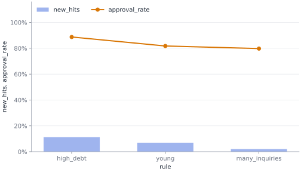
第一条规则拒绝 11.3% 的申请人，第三条只有 2.0%，通过率从 88.7% 降到 79.8%。#
规则的顺序决定各柱的高度，因为命中两条规则的申请人算在前一条上，但不会改变最后的通过率。两个数据系列共用一条坐标轴，函数返回的就是这一个 Axes。
按截断点看利润#
用 loss 和 revenue 计算的 cutoff_table() 有 profit 列。 profit_chart() 把它对 approval_rate 作图，并标出利润最高的截断点；cutoff_chart() 画的是事件率，看不出这一点。这里每个通过的申请人带来 600 的收入，每个事件造成 5,000 的损失：
>>> from kivi.plotting import profit_chart
>>> from kivi.strategy import cutoff_table
>>> table = cutoff_table(
... applications["incumbent_pd"],
... applications["target"],
... cutoffs=20,
... loss=5000.0 * applications["target"],
... revenue=pd.Series(600.0, index=applications.index),
... )
>>> ax = profit_chart(table)
>>> ax.texts[0].get_text()
'cutoff = 0.0962, profit = 4,261,600'
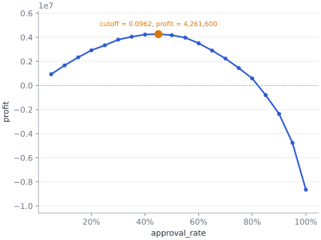
通过率到 45% 之前利润上升，之后下降，全部通过时亏损。#
给每次调用传入 label ，可以把两个评分的表画在同一个 ax 上。标出的点是利润最大的第一行，点线标出零利润。截断点就是表中的那些，所以最大值是其中最好的一个； cutoffs 取得更细，就能更精确地定位它。
按分组看 LGD#
lgd_chart() 绘制 lgd_table() ，每个分组三根柱：平均 LGD mean ，以及损失为零和损失全部的贷款占比 zero_share 和 full_share 。平均值掩盖了实际 LGD 呈双峰分布，这两个占比则能显示出来。模拟违约中已经结案的处置，其回收和成本按各笔违约的利率折现，结果如下：
>>> from kivi.datasets import make_defaults, make_recoveries
>>> from kivi.lgd import lgd_table, workout_lgd
>>> from kivi.plotting import lgd_chart
>>> defaults = make_defaults(rng=0)
>>> flows = make_recoveries(defaults, rng=0)
>>> closed = defaults[defaults["closing_date"].notna()].set_index("loan_id")
>>> flows = flows[flows["loan_id"].isin(closed.index)]
>>> workouts = workout_lgd(
... closed.index.to_series(),
... closed["default_date"],
... closed["ead"],
... flows["loan_id"],
... flows["date"],
... flows["amount"],
... rate=closed["discount_rate"],
... )
>>> table = lgd_table(closed["segment"], workouts["lgd"])
>>> ax = lgd_chart(table)
>>> [round(float(bar.get_height()), 3) for bar in ax.patches[:3]]
[0.096, 0.777, 0.685]
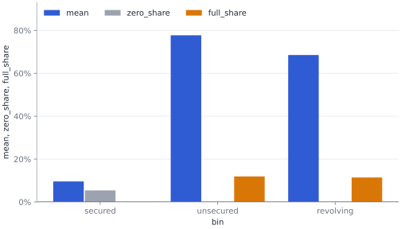
有担保贷款平均损失 10%，有时一分不损失，而无担保和循环贷款平均损失约 70%，且常常全部损失。#
三根柱共用一条百分比坐标轴。 lgd_table() 默认把 LGD 下限设为 0，因此只有 floor=None 时坐标轴才会低于 0；某组的均值高于 100% 时，坐标轴也会高于 100%。
特殊值#
特殊值保留 cut() 赋予它的分组，图表用其编码作为标签。以 pdays 为例，-1 表示此前没有联系过该客户：
>>> pdays = fit_spec(development[["pdays"]], development["target"], special={"pdays": [-1]})
>>> bars, line = woe_chart(pdays.tables["pdays"])
>>> [label.get_text() for label in bars.get_xticklabels()]
['-1', '(-inf, 105.0]', '(105.0, 175.6]', '(175.6, 255.4]', '(255.4, 342.2]', '(342.2, inf]']
-1 的柱形占样本的 82.5%。图表不会重排分组，因此特殊值分组保持在表中的位置，即各区间之前。
缺失值#
与计算示例中一样，缺失值分组标为 NaN 。列中的缺失值（例如没有已知结果的月份的 gini ，或某个批次尚未到达的账龄月）会在折线上留下缺口，也不画柱形。不通过任何申请人的截断点，其 approved_event_rate 缺失，在 cutoff_chart() 的曲线上没有对应的点。生存表中最后一个有账户处于风险中的期数之后没有取值，会使 survival_chart() 的曲线到此为止， transition_chart() 则把缺失的单元格留空。
局限#
图表按原样绘制表。它们没有
weights参数：要展示加权的占比和比率，请绘制用权重计算的表。新图形的尺寸、颜色和标签由函数决定，函数也不转发其他 matplotlib 属性；请在返回的 Axes 上修改它们。
图表不带标题，以便适用于任何语言的报告。可以用
ax.set_title添加标题。profit_chart()标出的是表中截断点里最好的一个，而不是评分的最优截断点；transition_chart()画的是矩阵，而不是roll_rates()的 Series。monitoring_chart()每次调用只绘制一列，correlation_chart()绘制的矩阵不带颜色条；可以用figure.colorbar(ax.images[0], ax=ax)添加颜色条。这些图表是静态的 matplotlib 图形，不支持交互。
错误与警告#
未安装 matplotlib 时，每个图表函数都会抛出 ImportError ，提示运行 pip install "kivi[plot]" 。
如果表缺少图表所需的列，会抛出 ValueError ，其中列出所期望的表应有的列以及缺少的列，例如把 PSI 表传给 woe_chart() 时：
>>> woe_chart(psi_table(reference["age"], single["age"]))
Traceback (most recent call last):
...
ValueError: table must have the columns ['total_share', 'event_rate', 'iv'] of kivi.woe.woe_table, missing ['total_share', 'event_rate', 'iv']
不是 matplotlib Axes 的 ax 、空表、非数值的列、 distribution_chart() 的表中的负计数或没有事件或非事件的表，以及含有超出 [-1, 1] 的值的相关系数矩阵同样会抛出 ValueError 。抛出错误的图表函数不会留下空白图形。
打开的图形超过 20 个时，matplotlib 会发出警告。如果报告要为许多变量各画一张图，请保存每个图形后用 plt.close(ax.figure) 关闭它。